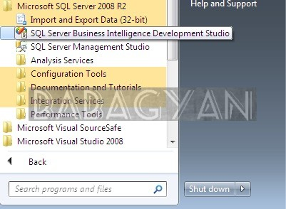
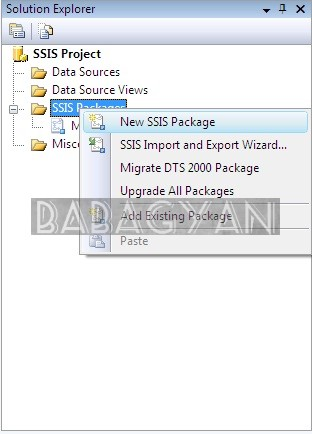

SSIS Exercise 01
SSIS Exercise 01
Create SSIS packages and Data sources
We will create a new SSIS project and then work with a couple of SSIS packages by adding data sources and connections.
Start SQL Server Business Intelligence Development Studio (BIDS), by clicking the Start button and then selecting All Programs, Microsoft SQL Server 2008, SQL Server Business Intelligence Development Studio.

{kind=link}
Choose New, Project from the File menu. (If you have Visual Studio 2008 installed separately from BIDS, simply choose New Project from the File menu.)
The New Project dialog box displays all the installed templates for Microsoft Visual Studio, including the Business Intelligence Projects templates.
In the New Project dialog box, confirm that Business Intelligence Projects is selected in the Project Types area, and then in the Templates area, select the Integration Services Project template.
Near the bottom of the New Project dialog box, in the Name box, type "SSIS Project" as the name of your SSIS project. Click OK to have BIDS create the new SSIS project.

When the project is created, SSIS automatically creates a new SSIS package named Package.dtsx and opens it in the SSIS Designer. In Solution Explorer, right-click Package.dtsx, and then click Rename.

Rename the package by typing .dtsx. BIDS might prompt you to rename the package object.
If a message box appears that prompts you to rename the package object as well, click Yes. Always click Yes if you are prompted to change the package object when renaming a package because this updates the internal name of the package.

Click the Save button on the toolbar, and then close the package by clicking the Close button in the upper-right corner of the SSIS Designer.
To create a new package, right-click the SSIS Packages folder in Solution Explorer, and then click New SSIS Package. This creates a new package object named Package1.dtsx (the number depends on how many packages you have created) in the SSIS Packages folder in Solution Explorer.

{kind=link}
To rename the new package, right-click the package, and then click Rename. Rename the package to DimCustomer.dtsx because this package will contain logic to process the customer dimension table. When prompted, click Yes to rename the package object.

Following the same steps, create one more package in your SSIS Project named DimPromotion.dtsx.

Also Read
- Case Study: Multiply Revenue as well as Customer Base
- Tool: Project Stages Tracker
- Exploring Cloud platform on Google
- BabaGyan.com Exploring Ghost Blogging platform on Bitnami
- Solutions for issues faced during hadoop configuration
- Hadoop and Ubuntu - step 4
- Hadoop and Ubuntu - step 3
- Hadoop and Ubuntu - step 2
- Hadoop and Ubuntu - step 1
- Usage of Hadoop
- Hadoop architecture birdview
- Pros and Cons of Gmail displaying images in your emails
- CLT20 2013 Twitter Analysis
- ETL BI BigData Past Future
- Tool: Daily Expense Tracker
- Lifesaver: Ways to create a website
- LifeSaver: Business Intelligence Projects - Success and Failures
- LifeSaver: Differences between UDT and IDT
- Data Quality in ETL and BI
- Problem Solving Methodology
- What is Mentoring
- QlikView advantage over query based BI
- Types of data
- Lyrics One Two Three Four Chennai Express
- QlikView Licensing - an Overview
- Theme song lyrics - Baba jee ki booti
- TV - OLED vs LED vs LCD vs Plasma
- Review Google Moto X
- Review: Blackberry Q10 and Blackberry Q5
- Lifesaver - SSRS All in one
- Lifesaver - SSIS All in one
- Lifesaver - SSAS MDX Quick fixes
- Lifesaver - SSRS Quick fixes
- SSIS Package Variables, Script and Profiling
- Lifesaver - SSIS Quick fixes
- SSIS Control Flow Containers
- SSIS Control Flow Objects
- SSIS Exercise 05
- SSIS Exercise 04
- SSIS Exercise 03
- SSIS Exercise 02
- SSIS Exercise 01
- Theme song lyrics - The Big Bang Theory
- Theme song lyrics - F.R.I.E.N.D.S
- SQL - Aggregate & Analytic functions
- SQL - List of Analytical functions
- SQL - Where, Operators and alias
- SQL - Structured Query Language for Database quering